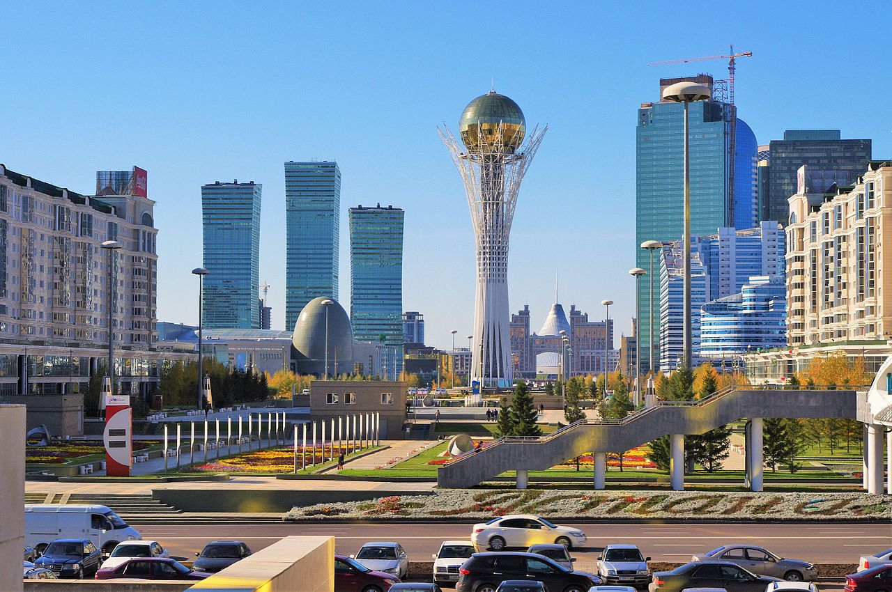

Проект был запущен по инициативе первого президента РК Нурсултана Назарбаева, архитектор проекта — Акмурза Рустембеков[1][2].
При строительстве объём земляных работ составил 8600 м³, бетонных — 2900 м³, металлоконструкций — 1 килотонна, остекление купола — 1555 м².
Для выполнения отделочных, инженерных и специальных работ было привлечено 23 субподрядчика.
Примерная стоимость металлоконструкции и остекления около — 6 млн $. Объект сдан по акту Госкомиссии в 2003 году.
Высота сооружения составляет 97 метров, с шаром, венчающим конструкцию — 102 метра.
Диаметр шара — 22 метра.
Нижний уровень уходит на четыре с половиной метра под землю, где расположены кафе, аквариумы и минигалерея «Байтерек».
Оттуда же можно подняться на лифте на самый верхний уровень — шар, внутри которого располагаются бар и панорамный зал.
Обзорные экскурсии для посетителей проводятся на казахском, русском и других языках.
В 2016 году было принято решение о необходимости ремонта конструкции общей стоимостью в 400 млн тенге.
Главная страница
Главное меню